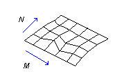

|
Add3DMesh Method |
Creates a free-form 3D mesh, given the number of points in the M and N directions and the coordinates of the points in the M and N directions.
Signature
RetVal = object.Add3Dmesh(M, N, PointsMatrix)
Object
ModelSpace Collection, PaperSpace Collection, Block
The objects this method applies to.
M, N
Integer; input-only
Dimensions of the point array. The size of the mesh in both the M and N directions is limited to between 2 and 256.
PointsMatrix
Variant (array of doubles); input-only
M x N matrix of 3D WCS coordinates. Defining vertices begins with vertex (0,0). Supplying the coordinate locations for each vertex in row M must be done before specifying vertices in row M + 1.
RetVal
PolygonMesh object
A PolygonMesh as the newly created 3DMesh object.
Remarks
Vertices may be any distance from each other.

A PolygonMesh is always open in both M and N directions. A mesh can be closed after creation by using the MClose and NClose properties on the PolygonMesh object.
A PolygonMesh is always created as a simple mesh. A mesh can be smoothed after creation by using the Type property.
| Comments? |